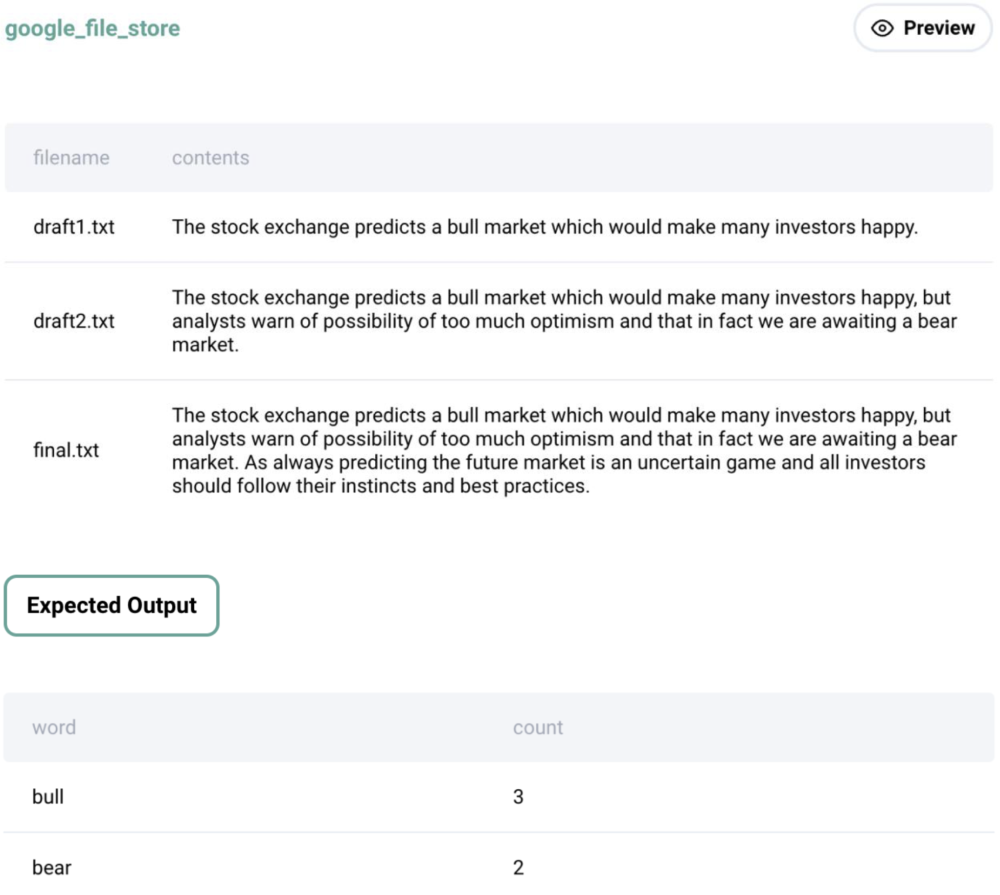

Question sourced from StrataScratch.com.
Database: MySQL
Find the number of times the words 'bull' and 'bear' occur in the contents. We're counting the number of times the words occur so words like 'bullish' should not be included in our count.
Output the word 'bull' and 'bear' along with the corresponding number of occurrences.

/*
My strategy: I'm making the assumption that the question is asking
for the number of instances that 'bull' or 'bear' appear AT LEAST
ONCE in the sentence (e.g. if 'bull' appears twice in a single
sentence, then that counts as one instance). First, replace all
punctuation in the contents column with a space, and convert all
contents to lowercase. Wrap this result set in a CTE, then reference
the CTE to create two result sets: the first result set counting the
total rows where ' bull ' appears, and the second result set counting
the total rows where ' bear ' appears. Union these two result sets
to create the final table.
*/
WITH transformed_text AS (
SELECT LOWER(REGEXP_REPLACE(contents, '[.,\/#!$%\^&\*;:{}=\_`~()-]', ' ')) AS sentence
FROM google_file_store
)
SELECT 'bull' AS word, COUNT(*) AS sentence_count
FROM transformed_text
WHERE sentence LIKE '% bull %'
UNION
SELECT 'bear' AS word, COUNT(*) AS sentence_count
FROM transformed_text
WHERE sentence LIKE '% bear %';